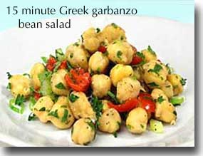
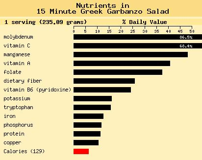

World's Healthiest Foods
15-Minute Greek Garbanzo Bean Salad
Rich in protein and dietary fiber, this fresh-tasting salad provides 11% of your Daily Value (DV) for protein and 26% DV for dietary fiber. It only takes minutes to prepare and gets tastier the longer it marinates.
Make this quick and easy recipe a regular addition to your Healthiest Way of Eating.

Prep and Cook Time: 15 minutes
Ingredients:
2 cups or 1 15 oz can garbanzo beans (without BPA), drained and rinsed 2/3 cup minced scallion
3 medium cloves garlic, pressed or finely chopped
1 medium ripe tomato, seeds removed and chopped
3 medium ribs celery, diced about 1/2-inch pieces
3 TBS fresh lemon juice
2 1/2 TBS chopped fresh mint (or 2 1/2 tsp dried mint)
3 TBS chopped fresh parsley (or 3 tsp dried parsley)
extra virgin olive oil to taste
1 small head chopped romaine lettuce, outer leaves removed, and discarded
salt & cracked black pepper to taste
* optional: 1/4 cup feta cheese
Directions:
Mix all ingredients except lettuce and cheese in a bowl and season with salt and pepper to taste.
Serve on bed of chopped romaine lettuce and sprinkle with feta cheese, if desired.
Serves 4
Nutritional Profile
